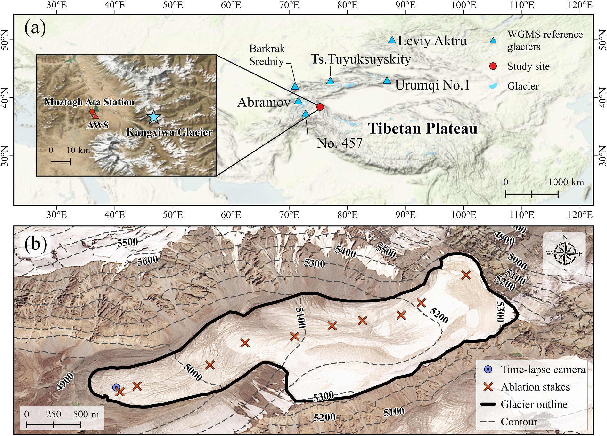
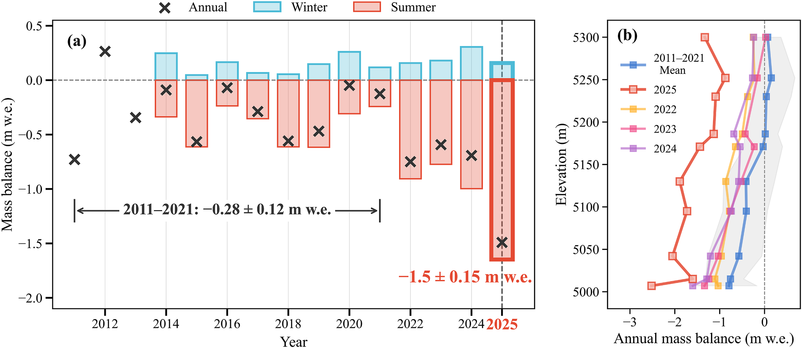
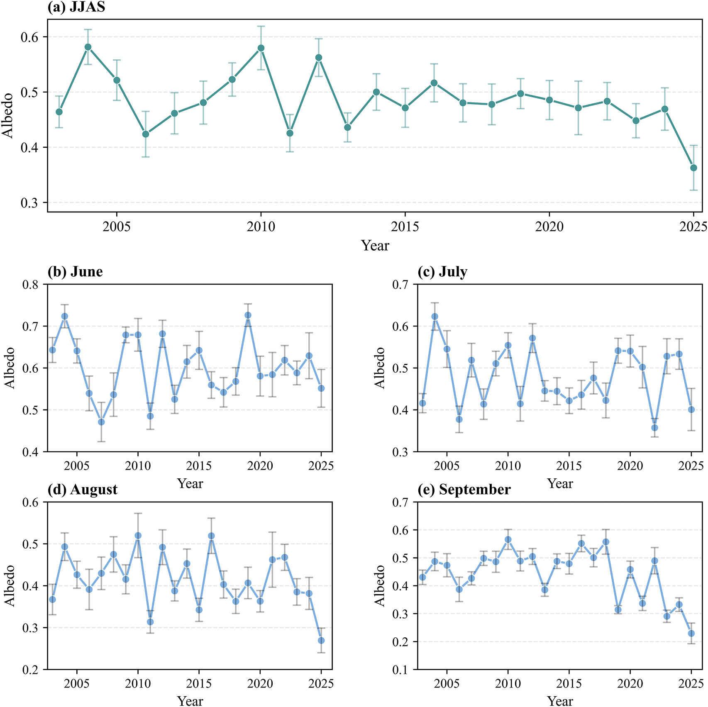
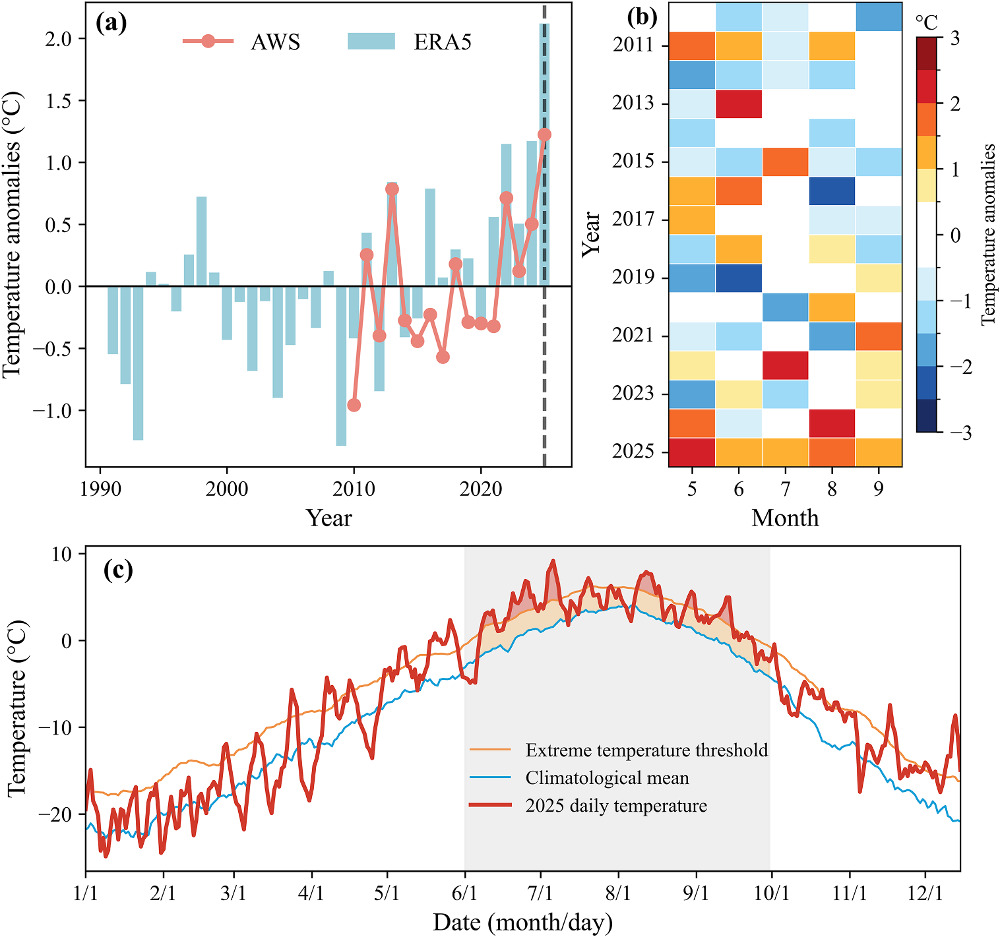
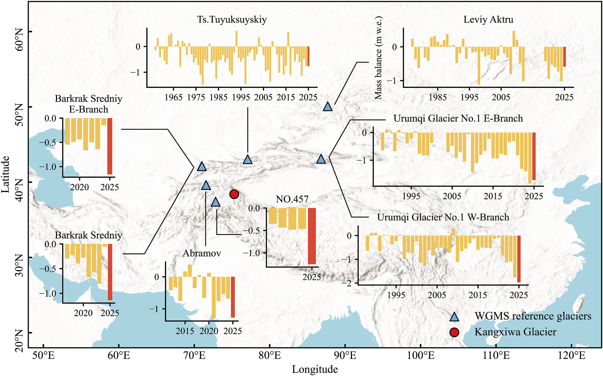
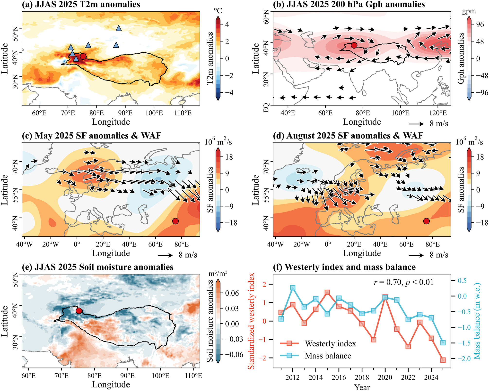
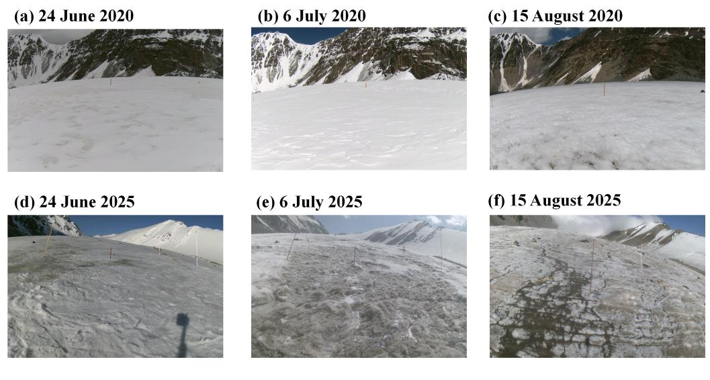
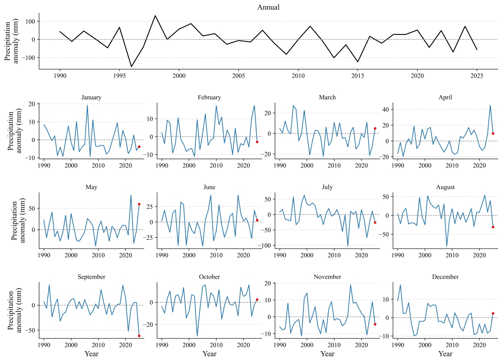
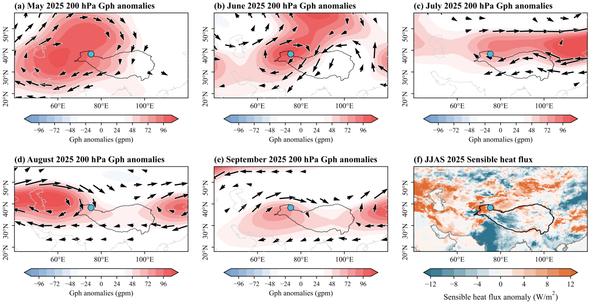

帕米尔地区 2025 年前所未有的冰川质量损失
Unprecedented 2025 glacier mass loss in Pamir
离线单文件中英对照译文。默认仅显示中文；参考文献条目按交付范围未译。主文 6 幅图与官方补充材料 3 幅图均已内嵌。
论文信息 ｜Paper information
短篇通讯
Short Communication
Yu FANa,b，Ying XIEa,c,*，Yi-Fei HEa,b，Zhen HEa,b，Peng-Ling WANGd，Wei YANGa,c
Yu FANa,b, Ying XIEa,c,*, Yi-Fei HEa,b, Zhen HEa,b, Peng-Ling WANGd, Wei YANGa,c
a 中国科学院青藏高原地球系统、环境与资源国家重点实验室（TPESER），中国科学院青藏高原研究所，北京 100101，中国
a State Key Laboratory of Tibetan Plateau Earth System, Environment and Resources (TPESER), Institute of Tibetan Plateau Research, Chinese Academy of Sciences, Beijing 100101, China
b 中国科学院大学，北京 100049，中国
b University of Chinese Academy of Sciences, Beijing 100049, China
c 中国科学院慕士塔格西风环境观测研究站，阿克陶 845550，中国
c Muztagh Ata Station for Westerly Environment Observation and Research, Chinese Academy of Sciences, Akto 845550, China
d 中国气象局国家气候中心，北京 100081，中国
d National Climate Center, China Meteorological Administration, Beijing 100081, China
收稿日期：2026年1月15日；修订日期：2026年3月21日；录用日期：2026年4月30日
Received 15 January 2026; revised 21 March 2026; accepted 30 April 2026
* 通讯作者。中国科学院青藏高原地球系统、环境与资源国家重点实验室，中国科学院青藏高原研究所，北京 100101，中国。
* Corresponding author. State Key Laboratory of Tibetan Plateau Earth System, Environment and Resources, Institute of Tibetan Plateau Research, Chinese Academy of Sciences, Beijing 100101, China.
电子邮箱：xieying@itpcas.ac.cn（XIE Y.）。
E-mail address: xieying@itpcas.ac.cn (XIE Y.).
同行评审由国家气候中心（中国气象局）负责。
Peer review under responsibility of National Climate Centre (China Meteorological Administration)
https://doi.org/10.1016/j.accre.2026.04.018
https://doi.org/10.1016/j.accre.2026.04.018
1674-9278/© 2026 作者。
1674-9278/© 2026 The Authors.
由 Elsevier B.V. 代表科爱传播有限公司提供出版服务。
Publishing services by Elsevier B.V. on behalf of KeAi Communications Co. Ltd.
本文为采用 CC BY-NC-ND 许可协议（http://creativecommons.org/licenses/by-nc-nd/4.0/）的开放获取文章。
This is an open access article under the CC BY-NC-ND license (http://creativecommons.org/licenses/by-nc-nd/4.0/).
摘要 ｜Abstract
近期极端高温事件已在全球范围内造成异常的冰川质量亏损。
Recent extreme heat events have caused exceptional glacier mass loss worldwide.
然而，其对质量平衡异常稳定或略呈正值的帕米尔—喀喇昆仑冰川的影响仍不清楚。
However, their impact on Pamir—Karakoram glaciers with anomalously stable or slightly positive mass balances remains unclear.
基于冰川学质量平衡观测、气象记录和表面反照率分析，本研究报告了东帕米尔康西瓦冰川在2025平衡年发生的前所未有的冰川质量亏损。
Based on glaciological mass balance observations, meteorological records and surface albedo analysis, this study reports the unprecedented glacier mass loss of Kangxiwa Glacier in the eastern Pamir during the 2025 balance year.
2025年，康西瓦冰川的年质量平衡为创纪录的负值−1.5 ± 0.15 m w.e.，远低于历史平均水平（2010—2024年为−0.36 ± 0.14 m w.e. / 年）。
Kangxiwa Glacier experienced a record-breaking negative annual mass balance of −1.5 ± 0.15 m w.e. in 2025, which was substantially more negative than the historical average (−0.36 ± 0.14 m w.e. per year in 2010—2024).
相应地，康西瓦冰川表面反照率达到自2003年以来的最低水平，尤其是在8月和9月。
Correspondingly, the surface albedo of Kangxiwa Glacier reached the lowest level since 2003, particularly in August and September.
在受罗斯贝波和土壤湿度调制的高层反气旋（高压）大气形势持续主导下，康西瓦冰川自5月至9月经历了前所未有且持续的高温，从而引发极端冰川质量亏损。
Under the persistent dominance of the upper-level anticyclonic (high pressure) atmospheric pattern modulated by Rossby waves and soil moisture, Kangxiwa Glacier experienced unprecedented and persistent high temperatures from May to September, inducing extreme glacier mass loss.
帕米尔各地的其他冰川也普遍出现了这种破纪录的冰川质量亏损。
Such record-breaking glacier mass loss was widespread among other glaciers across the Pamir.
在全球变暖背景下，极端高温事件频率增加可能会加速帕米尔冰川消融，凸显了在该地区持续开展气象和冰川学观测的重要性。
In the context of global warming, the increasing frequency of extreme heat events is likely to accelerate glacier ablation in Pamir, highlighting the importance of continuous meteorological and glaciological observations in this region.
关键词 ｜Keywords
康西瓦冰川；东帕米尔；极端高温；冰川消融；大气环流
Kangxiwa Glacier; Eastern Pamir; Extreme high temperature; Glacier ablation; Atmospheric circulation
1. 引言 ｜1. Introduction
冰川是地球系统中对气候最敏感的组成部分之一。
Glaciers are among the most climate-sensitive components of the Earth system.
冰川质量亏损的普遍加速正在对全球海平面上升（Zemp et al., 2019）、区域水资源（Huss and Hock, 2018）和冰川相关灾害（Sattar et al., 2025；Zhang et al., 2023）产生显著影响。
Widespread accelerating glacier mass loss is posing pronounced impact on global sea-level rise (Zemp et al., 2019), regional water resource (Huss and Hock, 2018), and glacier-related hazards (Sattar et al., 2025; Zhang et al., 2023).
在持续的全球变暖背景下，极端高温事件的频率、持续时间和强度正在上升（Horton et al., 2016；Li et al., 2021；Martinez-Villalobos et al., 2025）。
Under ongoing global warming, the frequency, duration, and intensity of extreme heat events are rising (Horton et al., 2016; Li et al., 2021; Martinez-Villalobos et al., 2025).
极端高温事件被认为会极大地促成极端冰川质量亏损。
Extreme heat events are recognized to tremendously contribute to extreme glacier mass loss.
例如，Cremona et al. (2023) 报道，在2022年夏季持续25 d的热浪事件期间，瑞士冰川的融化速度是先前观测到的两至三倍，占年消融量的56%。
For instance, Cremona et al. (2023) reported that during the 25-d heatwave event of the 2022 summer, glaciers in Switzerland melted two to three times faster than previous observations, accounting for 56% of annual ablation.
同样，东天山乌鲁木齐河源1号冰川在2022年夏季经历了有记录以来最高的质量亏损（Xu et al., 2024）。
Similarly, Urumqi No.1 Glacier in the eastern Tianshan experienced the highest mass loss on record in summer 2022 (Xu et al., 2024).
2024年，斯瓦尔巴群岛在创纪录高温下经历了破纪录的质量亏损（Schuler et al., 2025）。
In 2024, Svalbard experienced record-breaking mass loss under record-high temperature (Schuler et al., 2025).
帕米尔冰川是中亚水资源的关键组成部分，能够调节主要河流的径流，并维持下游干旱地区的农业和生态系统（Immerzeel et al., 2020）。
Glaciers in the Pamir are critical components of Central Asia's water resources, regulating runoff for major rivers and sustaining agricultural and ecological systems in downstream arid regions (Immerzeel et al., 2020).
从20世纪70年代到21世纪初，西昆仑山、喀喇昆仑山和东帕米尔的冰川维持了稳定或略呈正值的质量平衡，这与高山亚洲冰川的普遍退缩和质量亏损形成对比（Gardelle et al., 2013；Kääb et al., 2015；Zhu et al., 2025）。
From the 1970s to the early 21st century, glaciers in the western Kunlun Mountain, the Karakoram Mountain, and the eastern Pamir maintained stable or slightly positive mass balance, contrasting with the widespread retreat and mass loss of High Mountain Asia glaciers (Gardelle et al., 2013; Kääb et al., 2015; Zhu et al., 2025).
这一现象被广泛称为帕米尔—喀喇昆仑异常（Gardelle et al., 2013）。
This phenomenon has been widely referred to as the Pamir—Karakoram Anomaly (Gardelle et al., 2013).
然而，近期观测表明该地区冰川消融正逐步增强（Hugonnet et al., 2021；The GlaMBIE Team, 2025），这表明帕米尔—喀喇昆仑异常可能正在减弱。
Nevertheless, recent observations indicated a progressive intensification of glacier ablation across this region (Hugonnet et al., 2021; The GlaMBIE Team, 2025), suggesting that the Pamir—Karakoram Anomaly may be weakening.
尽管近期全球热浪的频率和强度有所增加，但由于连续地面质量平衡观测稀缺，帕米尔—喀喇昆仑冰川对极端高温事件的响应仍缺乏充分约束。
Despite a recent increase in the frequency and intensity of global heatwaves, the response of glaciers in the Pamir—Karakoram to extreme heat events remains poorly constrained, owing to the scarcity of continuous ground-based mass balance observations.
康西瓦冰川位于东帕米尔公格尔山，自2011年以来一直开展连续的冰川学质量平衡测量。
Kangxiwa Glacier is located in the Kongur Mountain of the eastern Pamir, with continuous glaciological mass balance measurements since 2011.
本研究整合了现场质量平衡观测、气象数据集和卫星反演的冰川表面反照率，以研究康西瓦冰川2025年前所未有质量亏损的幅度和驱动因素，并探讨与该事件相关的大尺度大气形势。
In this study, we integrated in-situ mass balance observations, meteorological datasets, and satellite-derived glacier surface albedo to investigate the magnitude and drivers of the unprecedented mass loss of Kangxiwa Glacier in 2025 and explore the large-scale atmospheric pattern associated with this event.
本研究结果将为理解极端事件对这一干旱地区冰川质量平衡的影响提供宝贵见解。
The result would provide valuable insight into the influence of extreme events on glacier mass balance in this arid region.
2. 研究区、数据集与方法 ｜2. Study site, datasets and methods
2.1. 研究区 ｜2.1. Study site
康西瓦冰川（兰道夫冰川编目 ID：RGI60—13.41822，38.28° N，75.28° E）位于东帕米尔公格尔山西南缘（图1a），地处慕士塔格峰以北。
Kangxiwa Glacier (Randolph Glacier Inventory ID: RGI60—13.41822, 38.28° N, 75.28° E) is located in the southwest edge of Kongur Mountain in eastern Pamir (Fig. 1a) and lies north of Muztag Ata Mountain.
该冰川面积约为1.9 km2，长度约3 km，海拔范围为4960至5350 m（a.s.l.）。
This glacier covers an area of approximately 1.9 km2, with a length of about 3 km, and spans an elevation range from 4960 to 5350 m above sea level (a.s.l.).
该冰川朝西，表面无碎屑覆盖（图1b）；根据兰道夫冰川编目（RGI）数据集，其平均表面坡度约为14°（Pfeffer et al., 2014）。
This west-facing glacier features a debris-free surface (Fig. 1b) and an average surface slope of approximately 14° according to the Randolph Glacier Inventory (RGI) dataset (Pfeffer et al., 2014).
该冰川的气候状况主要受中纬度西风带控制（Yao et al., 2012）。
The climate regime of this glacier is primarily governed by the mid-latitude Westerlies (Yao et al., 2012).
自2010年9月起，中国科学院慕士塔格西风环境观测研究站（以下简称“慕士塔格站”）一直对该冰川开展系统的冰川质量平衡观测。
Since September 2010, systematic glacier mass balance observations of this glacier have been conducted by the Muztagh Ata Station for Westerly Environment Observation and Research, Chinese Academy of Sciences (hereafter referred to as the Muztagh Ata Station).
大地测量结果显示，2000—2020年，该地区冰川保持相对稳定，平均冰川质量平衡为+0.054 ± 0.015 m水当量（w.e.）/ 年（Hugonnet et al., 2021）。
Geodetic results showed that glaciers in this region remained relatively stable during 2000—2020, with a mean glacier mass balance of +0.054 ± 0.015 m water equivalent (w.e.) per year (Hugonnet et al., 2021).
然而，冰川由质量积累转为质量亏损：2015—2020年，冰川质量平衡转为−0.017 ± 0.04 m w.e. / 年；而在2000—2005年、2005—2010年和2010—2015年，该值则分别为正值+0.143 ± 0.049、+0.072 ± 0.021和+0.014 ± 0.015 m w.e. / 年（Hugonnet et al., 2021）。
Nevertheless, a transition from mass accumulation to mass loss emerged, with the glacier mass balance shifting to −0.017 ± 0.04 m w.e. per year during 2015—2020, compared with positive values of +0.143 ± 0.049, +0.072 ± 0.021, and +0.014 ± 0.015 m w.e. per year during 2000—2005, 2005—2010, and 2010—2015, respectively (Hugonnet et al., 2021).
2.2. 数据集与方法 ｜2.2. Datasets and methods
2.2.1. 冰川物质平衡观测 ｜2.2.1. Glacier mass balance observation
2010年9月至2025年9月，采用冰川学方法测量了康西瓦冰川的质量平衡（Cogley et al., 2011；Kaser et al., 2003）。
The mass balance of Kangxiwa Glacier was measured using glaciological methods from September 2010 to September 2025 (Cogley et al., 2011; Kaser et al., 2003).
沿康西瓦冰川中央流线布设了消融桩，其范围从冰川末端延伸至冰川上部积累区（图1b）。
Ablation stakes were installed along the central flowline of Kangxiwa Glacier, extending from the terminus to the upper accumulation zone of this glacier (Fig. 1b).
2013年后，每年开展两次冰川学测量（6月初和9月末），以获得冰川年、夏季和冬季质量平衡。
Glaciological measurements were conducted twice annually (early June and late September) after 2013 to get annual, summer, and winter glacier mass balances.
2011—2013年仅开展了年度测量。
For 2011—2013, only annual measurements were conducted.
在每次测量中，反复测量桩高、雪深以及不同地层层位的雪密度变化。
At each survey, changes in stake height, snow depth, and snow density at different stratigraphic layers were repeatedly measured.
随后按照 Kaser et al. (2003)，采用面积加权法计算全冰川年、夏季和冬季质量平衡。
Glacier-wide annual, summer, and winter glacier mass balances were then calculated using the area-weighted method following Kaser et al. (2003).
在全冰川质量平衡计算中，假定冰川面积保持不变，因为 RGI 边界与2025年冰川边界所对应的冰川面积几乎没有变化（图1b）。
The glacier area was assumed to remain unchanged in the glacier-wide mass balance calculation because the glacier area showed almost no change between the RGI outline and the 2025 glacier outline (Fig. 1b).
点位野外测量及其在整个冰川范围内的空间外推，是计算得到的全冰川质量平衡的两个主要误差来源（Galos et al., 2017；Klug et al., 2018；Zemp et al., 2010）。
Point field measurements and their spatial extrapolation over the entire glacier are two major error sources of the calculated glacier-wide mass balance (Galos et al., 2017; Klug et al., 2018; Zemp et al., 2010).
遵循 Huss et al. (2009) 和 Zemp et al. (2013)，点位野外测量的不确定性（εglac:point）在消融区设为±0.1 m w.e.，在积累区设为±0.3 m w.e.。
Following Huss et al. (2009) and Zemp et al. (2013), the uncertainty of point field measurements (εglac:point) is set to ±0.1 m w.e. for the ablation area and ±0.3 m w.e. for the accumulation area.
按照 Huss et al. (2009) 的方法，通过计算和比较利用随机缩减的年度测桩数据集获得的平均比净质量平衡，评估空间外推不确定性（εglac:spatial）。
Uncertainty of spatial extrapolation (εglac:spatial) is assessed by computing and comparing the mean specific net mass balance obtained with randomly reduced annual stake datasets following the method of Huss et al. (2009).
遵循 Zemp et al. (2013)，通过综合 εglac:point 和 εglac:spatial 计算全冰川质量平衡的总体不确定性。
Overall uncertainties for the glacier-wide mass balances are calculated by integrating εglac:point and εglac:spatial, following Zemp et al. (2013).
2010至2025年康西瓦冰川质量平衡数据集已在国家青藏高原数据中心公开提供（https://doi.org/10.11888/Cryos.tpdc.303431）。
The mass balance dataset of Kangxiwa Glacier from 2010 to 2025 is publicly available on the National Tibetan Plateau Data Center (https://doi.org/10.11888/Cryos.tpdc.303431).
此外，利用世界冰川监测服务（WGMS）（https://wgms.ch/）存档的中亚若干冰川质量平衡观测数据，评估在帕米尔康西瓦冰川观测到的极端质量亏损模式的区域一致性（图1a）。
In addition, mass-balance observations of several glaciers across central Asia archived by the World Glacier Monitoring Service (WGMS) (https://wgms.ch/) were utilized to assess the regional consistency of the extreme mass loss pattern observed at Kangxiwa Glacier in the Pamir (Fig. 1a).
2.2.2. 冰川表面反照率 ｜2.2.2. Glacier surface albedo
遵循 Ren et al. (2021, 2023, 2024) 提出的基于遥感的方法，基于中分辨率成像光谱仪（MODIS）地表反射率产品（MOD09GA 和 MYD09GA），利用 Google Earth Engine 平台反演了康西瓦冰川的全冰川平均表面反照率。
Glacier-wide average surface albedo of Kangxiwa Glacier was derived using the Google Earth Engine platform based on Moderate Resolution Imaging Spectroradiometer (MODIS) surface reflectance products (MOD09GA and MYD09GA), following the remote-sensing-based method proposed by Ren et al. (2021, 2023, 2024).
对 MODIS 反照率产品进行了表面各向异性效应校正，随后按照 Liang (2001) 和 Stroeve et al. (2005) 的方法进行了窄波段至宽波段反照率转换。
The MODIS albedo products were corrected for surface anisotropy effects, and narrowband-to-broadband albedo conversion was subsequently performed following the methods of Liang (2001) and Stroeve et al. (2005).
该过程获得了2003至2025年的冰川表面反照率，用于分析长期反照率趋势。
This procedure yielded glacier surface albedo from 2003 to 2025 to analyze the long-term albedo trend.
最后，按照 Ren et al. (2024) 提出的方法评估了表面反照率的不确定性。
Finally, the uncertainty of surface albedo was assessed following the method proposed by Ren et al. (2024).
此外，在海拔约5005 m a.s.l.的冰川末端附近安装了一台 Forsafe H801 延时相机（图1b），由八节 AA 电池和一块太阳能电池板供电。
In addition, a Forsafe H801 time-lapse camera was installed near the glacier terminus at an elevation of approximately 5005 m a.s.l. (Fig. 1b) and was powered by eight AA batteries and a solar panel.
该相机以每小时间隔获取图像，生成连续图像以记录冰川表面雪况。
The camera acquired images at hourly intervals, generating continuous images to document glacier surface snow conditions.
2.2.3. 气象数据与大气环流分析 ｜2.2.3. Meteorological data and atmospheric circulation analysis
气象数据包括慕士塔格站 Campbell 自动气象站（AWS）的观测资料，以及欧洲中期天气预报中心 ERA5 数据集的第五代再分析资料。
Meteorological data include observations from a Campbell AWS at Muztagh Ata Station, and the fifth generation of reanalysis data from the European Center for Medium-Range Weather Forecasts (ERA5) dataset.
该 AWS 位于约3650 m a.s.l.处，距康西瓦冰川末端约23 km（图1a）。
The AWS is located at ∼3650 m a.s.l., approximately 23 km from the terminus of Kangxiwa Glacier (Fig. 1a).
它使用 Vaisala HMP155 传感器，以30 min间隔记录气温。
It records air temperature at 30-min intervals using a Vaisala HMP155 sensor.
AWS 气象数据可在 Zenodo 获取（https://zenodo.org/records/19063149）。
Meteorological data from the AWS are available in Zenodo (https://zenodo.org/records/19063149).
包含2 m气温、降水、土壤湿度、感热通量、位势高度和风速场的 ERA5 数据集取自欧洲中期天气预报中心。
The ERA5 dataset, including 2 m air temperature, precipitation, soil moisture, sensible heat flux, geopotential height, and wind speed fields, was obtained from the European Centre for Medium-Range Weather Forecasts.
使用 ERA5 和 AWS 的气温数据分析2025年消融季持续的极端高温。
The air temperatures of ERA5 and AWS were used to analyze the persistent extreme high temperature during the melt season of 2025.
基于康西瓦冰川格点处的 ERA5 2 m气温，使用10 d窗口计算日气候态（1991—2020年）平均值和极端温度阈值（超过第95百分位数）（Yan et al., 2001）。
Based on ERA5 2 m air temperature at the grid of Kangxiwa Glacier, daily climatological (1991—2020) average and the extreme temperature threshold (exceeding 95th-percentile) were calculated using a 10-d window (Yan et al., 2001).
500 hPa位势高度通常用于表征环流，但在高海拔地区它距地表过近（Gui et al., 2024）。
500 hPa geopotential height is commonly used to indicate circulation, but it is too close to the surface over high-elevation regions (Gui et al., 2024).
相比之下，200 hPa位势高度更接近对流层高层高度（Deng et al., 2023），且位于环球波列所在的气压层（Ding and Wang, 2005）。
In contrast, geopotential height at 200 hPa is closer to the height of the upper-level troposphere (Deng et al., 2023) and on the pressure-level of the circumglobal wave train (Ding and Wang, 2005).
因此，计算了相对于1990—2020年平均值的200 hPa位势高度和风场距平，以研究与2025年极端冰川质量亏损相关的大气环流。
Hence, the anomalies of geopotential height and wind fields at 200 hPa (compared with the 1990—2020 average) were calculated to investigate the atmospheric circulation associated with the extreme glacier mass loss in 2025.
计算了相对于1990—2020年平均值的土壤湿度、感热通量和 T-N 波作用通量（WAF）距平，以探究该大气环流的形成驱动因素。
Anomalies (compared with the 1990—2020 average) of soil moisture, sensible heat flux, and the T-N wave activity flux (WAF) were calculated to explore the formative drivers of the atmospheric circulation.
WAF 表示罗斯贝波能量传播路径，并按照 Takaya and Nakamura (2001) 计算。
WAF indicates the pathway of the Rossby wave energy propagation and was calculated following Takaya and Nakamura (2001).
此外，计算西风指数以建立冰川与大尺度环流之间的联系。
In addition, westerly index was calculated to establish the connection between glaciers and large-scale circulation.
Mölg et al. (2017) 基于 Ding and Wang (2005) 的环球遥相关型定义了西风指数，以表征欧亚大陆上空的波列活动。
Westerly index was defined by Mölg et al. (2017) based on the circumglobal teleconnection pattern of Ding and Wang (2005) to represent the wave train activity over Eurasia.
3. 结果与讨论 ｜3. Results and discussion
3.1. 2025年康西瓦冰川前所未有的质量亏损和表面变暗 ｜3.1. Unprecedented mass loss and surface darkening of Kangxiwa Glacier in 2025
康西瓦冰川质量平衡呈中等幅度的年际波动，但在2022年前一直保持中等质量亏损的稳定格局，个别年份的质量平衡略呈正值（图2a）。
The mass balance of Kangxiwa Glacier exhibited moderate interannual fluctuations but remained in a stable pattern of moderate mass loss before 2022, with occasional years showing slightly positive mass balance (Fig. 2a).
2011至2021年，全冰川平均年质量平衡为−0.28 ± 0.13 m w.e. / 年，平均冬季积累和夏季消融分别为+0.14 m w.e. / 年和−0.42 m w.e. / 年。
From 2011 to 2021, the mean glacier-wide annual mass balance was −0.28 ± 0.13 m w.e. per year, with average winter accumulation and summer ablation of +0.14 m w.e. per year and −0.42 m w.e. per year, respectively.
自2022年以来，康西瓦冰川进入质量亏损加速阶段，并于2025年出现创纪录的质量亏损。
Since 2022, Kangxiwa Glacier has entered a phase of accelerated mass loss and experienced a record-high mass loss in 2025.
具体而言，2022年、2023年和2024年的冰川质量平衡分别为−0.75 ± 0.12、−0.59 ± 0.11和−0.69 ± 0.12 m w.e.，显著低于2011—2021年的平均值。
Specifically, glacier mass balances for 2022, 2023, and 2024 were −0.75 ± 0.12, −0.59 ± 0.11, and −0.69 ± 0.12 m w.e., respectively, which are substantially more negative than the 2011—2021 average.
2025年，年质量平衡达到−1.5 ± 0.15 m w.e.的极端负值，相当于2011—2024年历史平均值幅度的4.1倍（−0.36 ± 0.14 m w.e. / 年）。
In 2025, annual mass balance reached an extremely negative value of −1.5 ± 0.15 m w.e., equivalent to 4.1 times the magnitude of the historical average for 2011—2024 (−0.36 ± 0.14 m w.e. per year).
尽管2025年冬季积累（+0.16 m w.e.）与长期平均值相比没有明显偏差，但夏季质量亏损达到前所未有的1.7 m w.e.（图2a）。
While winter accumulation in 2025 (+0.16 m w.e.) showed no obvious deviation from the long-term average, summer mass loss reached an unprecedented value of 1.7 m w.e. (Fig. 2a).
因此，2025年的极端质量亏损可归因于异常强烈的夏季消融。
Hence, the extreme mass loss in 2025 can be attributed to anomalously intense summer melt.
如图2b所示，质量平衡的海拔分布进一步印证了2025年异常强烈的消融。
Altitudinal distribution of mass balance further corroborates the exceptional melt intensity in 2025 as shown in Fig. 2b.
在2011—2021年平均质量平衡条件下，积累区位于海拔约5170 m a.s.l.以上（图2b）。
For the 2011—2021 mean mass balance, the accumulation zone occurs above approximately 5170 m a.s.l. (Fig. 2b).
在2022年和2024年等质量亏损较大的年份，积累区消失。
In the years of high mass loss, such as 2022 and 2024, accumulation area disappeared.
然而，在质量亏损前所未有的2025年，各海拔带的年质量平衡均远低于以往任何年份。
However, for the unprecedented mass loss year 2025, the annual mass balance of each altitude band was much more negative than in any other previous year.
在高海拔带，年质量平衡低于−0.8 m w.e.，表明即使在高海拔地区也发生了强烈的冰川消融。
In the high-altitude zone, the annual mass balance is more negative than −0.8 m w.e., indicating that intense glacier melting occurred even at high elevations.
冰川表面反照率在调节冰川表面能量平衡中起关键作用，并直接影响冰川消融强度。
Glacier surface albedo plays a critical role in regulating surface energy balance and directly influences glacier melt intensity.
与2025年极端冰川质量亏损相一致，康西瓦冰川在2025年消融季（6—9月）表现出有记录以来最低的表面平均反照率。
Consistent with the extreme glacier mass loss in 2025, Kangxiwa Glacier exhibited the lowest surface average albedo on record during the 2025 melt season (June—September).
图3展示了2003至2025年消融季康西瓦冰川表面反照率的年际变化。
Fig. 3 presents the interannual variations in surface albedo of Kangxiwa Glacier during the melt season from 2003 to 2025.
2025年消融季平均反照率仅为0.36 ± 0.040（图3a），显著低于2003—2024年的历史平均值（0.49 ± 0.036）。
Mean albedo during the 2025 melt season was only 0.36 ± 0.040 (Fig. 3a), which was substantially lower than the historical average during 2003—2024 (0.49 ± 0.036).
2025年的异常低反照率主要集中在8月和9月，两个月均记录到自2003年以来的最低值（图3d和e）。
The anomalously low albedo in 2025 was mainly concentrated in August and September, both of which recorded the lowest values since 2003 (Fig. 3d and e).
相比之下，6月反照率为中等水平，而7月呈现相对较低的数值，但并非2003—2025年间最极端的数值（图3b和c）。
In contrast, albedo in June was moderate, while July exhibited relatively low values but not the most extreme during 2003—2025 (Fig. 3b and c).
特别是，9月反照率仅为0.23 ± 0.037，表明该月整个冰川表面几乎无积雪。
In particular, the albedo in September was only 0.23 ± 0.037, indicating that the whole glacier surface was nearly snow-free during this month.
2020年与2025年冰川表面延时照片的对比进一步证实了这一发现（图A1）。
A comparison of time-lapse photos of the glacier surface between 2020 and 2025 further corroborates this finding (Fig. A1).
与2020年相比，2025年冰川表面无雪面积显著更多、颜色更暗，导致表面反照率明显更低。
In 2025, the glacier surface was substantially more snow-free and darker compared to 2020, resulting in distinctly lower surface albedo.
反照率降低显著增强了冰川表面对入射太阳短波辐射的吸收，增加了能量输入，从而加剧了表面消融。
Reduced albedo substantially enhanced the absorption of incoming solar shortwave radiation by glacier surface, increasing energy input and thereby intensifying surface melt.
3.2. 不同大气环流下的气象异常及其对区域冰川的影响 ｜3.2. Meteorological anomalies under distinct atmospheric circulations and their impact on regional glaciers
2025年，消融季气温超过了以往所有观测值（图4a）。
In 2025, the air temperature during the melt season exceeded all previous observations (Fig. 4a).
根据ERA5数据集和AWS记录，2025年消融季平均气温距平分别为+2.2 °C和+1.2 °C，分别比第二暖年高0.9 °C和0.5 °C。
Based on the ERA5 dataset and the AWS records, the mean temperature anomalies during the 2025 melt season were +2.2 °C and +1.2 °C, exceeding those of the second warmest year by 0.9 °C and 0.5 °C, respectively.
先前研究报道，2022年和2024年夏季北半球发生了前所未有且广泛的极端高温事件（Jha et al., 2025；Pang et al., 2025；Xu et al., 2024）。
Previous studies have reported unprecedented and widespread extreme heat events across the Northern Hemisphere in the summers of 2022 and 2024 (Jha et al., 2025; Pang et al., 2025; Xu et al., 2024).
康西瓦冰川在2022年和2024年也经历了强烈的质量亏损和炎热夏季，但未达到2025年的破纪录严重程度（图2）。
Kangxiwa Glacier also experienced intense mass loss and hot summer in 2022 and 2024, yet fell short of the record-breaking severity reached in 2025 (Fig. 2).
与其他以往年份相比，2025年以异常持久的高气温为特征。
In contrast to other previous years, the year 2025 was characterized by exceptionally persistent high air temperature.
2022年和2024年夏季异常高温仅限于个别月份：2022年为7月，2024年为8月（图4b）。
The anomalous high summer temperatures in 2022 and 2024 were limited to individual months: July in 2022 and August in 2024 (Fig. 4b).
尽管2025年月度极端气温的幅度相对弱于2022年和2024年，但2025年的高温持续时间显著更长。
Although the magnitude of monthly temperature extremes in 2025 was relatively weaker than in 2022 and 2024, the high temperatures in 2025 persisted substantially longer.
2025年5月至9月异常高温占主导，覆盖了整个冰川消融季。
Anomalous high temperatures prevailed from May to September in 2025, covering the entire glacier melt season.
图4c进一步证实了2025年持续的高温状况。
Fig. 4c further corroborates the persistent high-temperature conditions in 2025.
从6月至9月，大多数日的气温高于气候态（1991—2020年）平均值，并在6月下旬至7月上旬、8月中旬和9月中旬观测到超过极端高温阈值的情况。
From June to September, daily air temperatures were above the climatological (1991—2020) average on most days, with exceedances of the extreme high-temperature threshold observed from late June to early July, as well as in mid-August and mid-September.
整个消融季高温持续，导致冰川持续消融并加剧。
The persistence of high temperature throughout the entire melt season led to sustained and intensified glacier melt.
除异常高温外，8月和9月降水减少也促成了显著的冰川质量亏损。
In addition to anomalously high temperatures, reduced precipitation in August and September also contributed to the pronounced glacier mass loss.
如图A2所示，康西瓦冰川地区的降水量在8月为有记录以来第二低，9月达到有记录以来最低水平，而其他月份的降水与历史均值相比没有明显偏差。
As shown in Fig. A2, precipitation over the Kangxiwa Glacier ranked as the second lowest in August and reached the lowest level on record in September, whereas precipitation in other months showed no obvious deviation from the historical mean.
8月和9月降水偏少，与同期冰川表面反照率偏低相一致（图3d和e）。
The suppressed precipitation coincided with the low glacier surface albedo during August and September (Fig. 3d and e).
2025年在康西瓦冰川观测到的破纪录冰川质量亏损并非孤立事件，也同样出现在帕米尔其他冰川中。
The record-breaking glacier mass loss observed at Kangxiwa Glacier in 2025 was not an isolated occurrence but was mirrored at other glaciers across the Pamir.
如图5所示，若干WGMS冰川的质量平衡表明，2025年这种极端冰川质量亏损也出现在西帕米尔457号冰川、西天山Barkrak Srednity冰川和中天山Ts. Tuyuksuyskiy冰川。
As shown in Fig. 5, mass balances of several WGMS glaciers indicate that the extremely high glacier mass loss in 2025 was also observed in No. 457 Glacier in the West Pamir, Barkrak Srednity Glacier in the West Tian Shan, and Ts. Tuyuksuyskiy Glacier in the central TianShan.
在这些冰川中，457号冰川和 Barkrak Srednity 冰川的年度质量亏损显著超过了有记录以来第二高的质量亏损。
Among these glaciers, the annual mass loss of No. 457 and Barkrak Srednity substantially exceeded the second-highest mass loss on record.
相比之下，阿尔泰山的 Leviy Aktru 冰川在2025年没有表现出类似的极端质量亏损。
In contrast, Leviy Aktru Glacier in the Altai Mountains did not exhibit similar extreme mass loss in 2025.
极端冰川质量亏损的广泛发生表明，在康西瓦冰川观测到的极端质量亏损是由2025年影响整个帕米尔的区域尺度极端高温事件驱动的。
The widespread occurrence of extreme glacier mass loss indicates that the extreme mass loss observed at Kangxiwa Glacier was driven by the regional-scale extreme heat event that affected the entire Pamir in 2025.
如图6a所示，2025年夏季北半球多个地区出现了大范围极端高温。
As shown in Fig. 6a, the summer of 2025 was characterized by widespread extreme high-temperature across multiple regions of the Northern Hemisphere.
2025年消融季，整个帕米尔均观测到显著的正气温距平，与同期经历极端质量亏损的康西瓦冰川、457号冰川和Barkrak Srednity冰川的位置相一致。
Pronounced positive temperature anomalies were observed throughout the entire Pamir during the 2025 melt season, coinciding with the locations of glaciers—Kangxiwa Glacier, No. 457 Glacier, and Barkrak Srednity Glacier that experienced extreme mass loss during the same period.
相比之下，仅经历中等质量亏损的阿尔泰山 Leviy Aktru 冰川未表现出高温异常。
In contrast, Leviy Aktru Glacier in the Altai Mountains, which underwent only moderate mass loss, did not exhibit high-temperature anomalies.
帕米尔的异常高温与高层反气旋环流异常的发展相一致。
The anomalous high temperatures of the Pamir coincided with the development of upper-level anticyclone circulation anomalies.
2025年消融季，在帕米尔、中国东北和东欧上空观测到显著的200 hPa反气旋（高压）异常（图6b）。
During the melt season of 2025, pronounced anticyclonic (high-pressure) anomalies at 200 hPa were observed over the Pamir, northeastern China, and eastern Europe (Fig. 6b).
如图6b和图A3a‒e所示，帕米尔上空的高层反气旋环流型从5月持续至9月。
As shown in Fig. 6b and Fig. A3a‒e, the upper-level anticyclonic circulation pattern over the Pamir persisted from May to September.
反气旋系统通常促进下沉运动并抑制云形成，从而增强地表增温，导致极端高温事件发生（Deng et al., 2023；Jiang et al., 2023；Zhang et al., 2024）。
Anticyclone systems usually promote subsidence and suppress cloud formation, thereby enhancing surface warming, leading to the occurrence of extreme high temperature events (Deng et al., 2023; Jiang et al., 2023; Zhang et al., 2024).
为研究这一异常反气旋环流型的形成机制，分析了土壤湿度、地表感热通量、WAF及其相关流函数（SF）的距平。
To investigate the formative mechanisms of this anomalous anticyclone circulation pattern, anomalies of soil moisture, surface sensible heat flux, WAF, and the associated stream function (SF) of WAF were analyzed.
先前研究表明，罗斯贝波列在青藏高原增温中发挥重要作用（Deng et al., 2023；Mölg et al., 2017；Zhou et al., 2025）。
Previous studies have demonstrated the important role of Rossby wave trains in the warming of Tibetan Plateau (Deng et al., 2023; Mölg et al., 2017; Zhou et al., 2025).
如图6c和d所示，2025年5月和2025年8月分别有罗斯贝波列向帕米尔传播。
As shown in Fig. 6c and d, there were trains of Rossby waves propagating to the Pamir in May 2025 and August 2025, respectively.
波能量传入可促成反气旋的形成（Song et al., 2024）。
The reach of wave energy can contribute to the formation of anticyclones (Song et al., 2024).
依据Ding和Wang（2005）的环球遥相关型定义西风指数，以表征欧亚大陆上空的波列活动（Mölg et al., 2017）。
Westerly index was defined based on the circumglobal teleconnection pattern of Ding and Wang (2005) to represent the wave train activity over Eurasia (Mölg et al., 2017).
康西瓦冰川质量平衡与西风指数显著相关（r = 0.70，p < 0.01），表明康西瓦冰川质量平衡可通过环球遥相关受到波列活动调制（图6f）。
The mass balance of Kangxiwa Glacier is significantly correlated with westerly index (r = 0.70, p < 0.01), demonstrating that the mass balance of Kangxiwa Glacier can be modulated by wave train activity through circumglobal teleconnection (Fig. 6f).
如Zhou et al.（2025）所讨论的，这一发现将帕米尔冰川质量平衡与大尺度大气模态联系起来。
This finding links glacier mass balance in Pamir to large-scale atmospheric modes, as discussed in Zhou et al. (2025).
此外，2025年消融季在帕米尔观测到低于平均值的土壤湿度（图6e），并伴有较高的向上地表感热通量（图A3f）。
In addition, soil moisture below average was observed over Pamir in the melt season of 2025 (Fig. 6e), accompanied by high values of upward surface sensible heat flux (Fig. A3f).
干燥土壤可减少蒸发冷却并增加向上感热通量，进一步加强对流层高层反气旋环流（Fischer et al., 2007；Jiang et al., 2023）。
Dry soil can reduce evaporative cooling and increase upward sensible heat flux, further reinforcing the upper-tropospheric anticyclonic circulation (Fischer et al., 2007; Jiang et al., 2023).
总之，这一反气旋环流在帕米尔上空的长期持续维持了2025年整个消融季的高温，进而促成了2025年消融季破纪录的冰川质量亏损。
In summary, the prolonged persistence of this anticyclonic circulation over the Pamir maintained the high temperature through the whole melt season in 2025, which in turn contributed to the record-breaking glacier mass loss during the 2025 melt season.
驱动极端冰川质量亏损的这一大尺度环流型受罗斯贝波列活动和偏低土壤湿度调制。
This large-scale circulation pattern driving extreme glacier mass loss is modulated by Rossby wave train activity and dry soil moisture.
4. 结论 ｜4. Conclusions
本研究报告了2025年在东帕米尔康西瓦冰川观测到的前所未有的冰川质量亏损。
This study reports the unprecedented glacier mass loss observed at Kangxiwa Glacier in the eastern Pamir in 2025.
该冰川2025年全冰川范围的年质量亏损达到1.5 ± 0.15 m w.e.，约为历史均值幅度的4.1倍。
The glacier-wide annual mass loss of this glacier in 2025 reached 1.5 ± 0.15 m w.e., which is approximately 4.1 times the magnitude of the historical mean.
2025年消融季全冰川表面反照率为自2003年以来最低，尤其是在8月和9月。
Glacier-wide surface albedo during the 2025 melt season was the lowest since 2003, particularly in August and September.
这种极端质量亏损事件并非孤立事件，也广泛观测于帕米尔周边其他冰川，表明存在区域一致的信号。
Such an extreme mass loss event was not isolated but was also widely observed across other glaciers around the Pamir, indicating a regionally coherent signal.
受罗斯贝波和偏低土壤湿度影响，2025年消融季帕米尔地区持续受高层反气旋/高压系统控制。
Influenced by Rossby waves and dry soil moisture, the Pamir region was under the persistent control of the upper-level anticyclone/high-pressure system during the melt season of 2025.
因此，康西瓦冰川经历了近几十年来最热的消融季。
As a consequence, Kangxiwa Glacier experienced the hottest melt season in recent decades.
不同于其他年份仅有单个月出现极端高温异常，2025年的异常高温贯穿整个消融季，进一步加剧了帕米尔各地前所未有的质量亏损。
Unlike other years when extreme heat anomalies were confined to a single month, anomalously high temperatures in 2025 persisted throughout the whole ablation season, further reinforcing the unprecedented mass loss across Pamir.
尽管从1970年代至21世纪初东帕米尔大多数冰川保持相对稳定，但康西瓦冰川自2022年以来出现的显著质量亏损在2025年达到破纪录水平，表明帕米尔—喀喇昆仑异常可能正在减弱。
Although most glaciers in the eastern Pamir remained relatively stable from the 1970s to the early twenty-first century, the pronounced mass loss observed at Kangxiwa Glacier since 2022, which culminated in record-breaking mass loss in 2025, suggests that the Pamir—Karakoram Anomaly may be weakening.
持续变暖和极端事件频率增加可能会进一步加速该地区冰川质量亏损，凸显持续冰川和气象监测的重要性。
Continued warming and the increasing frequency of extreme events are likely to further accelerate glacier mass loss in this region, highlighting the importance of continuous glacier and meteorological monitoring.
利益冲突声明 ｜Declaration of competing interest
作者声明不存在利益冲突。
The authors declare no conflict of interest.
图注 ｜Figure captions

图1。（a）研究区及中亚其他 WGMS 参考冰川的位置；（a）中左侧小图显示慕士塔格站和自动气象站（AWS）的位置；（b）康西瓦冰川的表面特征，以及消融桩和延时相机的空间分布（底图为2025年8月22日获取的 Planet Scope 图像）。
Fig. 1. (a) Location of study site and other WGMS reference glaciers in central Asia (The small left panel in (a) describes the location of Muztagh Ata station and automatic weather station (AWS)), and (b) surface characteristics of Kangxiwa Glacier and the spatial distribution of ablation stakes and the time-lapse camera (The basemap is a Planet Scope image taken on 22 August, 2025).

图2。（a）2011至2025年康西瓦冰川的年、冬季和夏季质量平衡（竖直虚线表示2025年。黑色和红色文字分别表示2011—2021年平均年质量平衡和2025年年质量平衡），以及（b）不同年份康西瓦冰川年质量平衡的海拔分布（灰色阴影区表示2011至2021年各海拔所有数值的分布范围）。
Fig. 2. (a) Annual, winter and summer glacier mass balance of Kangxiwa Glacier from 2011 to 2025 (The vertical dashed line represents the year 2025. Black and red text describe the annual mass balance of 2011—2021 average and 2025), and (b) altitudinal distribution of the annual mass balance of Kangxiwa Glacier in different years (The gray shaded area represents the distribution range of all the values from 2011 to 2021 at different altitudes).

图3。2003至2025年康西瓦冰川表面反照率变化，（a）6—9月（JJAS）平均反照率，以及（b—e）分别为6月、7月、8月和9月平均反照率（误差棒表示计算得到的表面反照率不确定性）。
Fig. 3. Surface albedo change of Kangxiwa Glacier from 2003 to 2025, (a) average albedo in June—September (JJAS), and (b—e) average albedo in June, July, August, and September, respectively (Error bars represent the uncertainties of the calculated surface albedo).

图4。（a）慕士塔格站自动气象站（AWS，2010—2025年）和ERA5数据集（1979—2025年）记录的消融季（6—9月）平均气温距平（灰色虚线表示2025年），（b）AWS记录的5月、6月、7月、8月和9月各月气温距平热图，以及（c）ERA5记录的2025年日气温、气候态（1991—2020年）平均值和极端高温阈值（（c）中的灰色阴影区表示消融季）。
Fig. 4. (a) Average temperature anomalies in melt season (June—September) recorded by the AWS at Muztagh Ata Station (2010—2025) and the ERA5 dataset (1979—2025) (Gray dashed line represents the year 2025), (b) heatmap of respective monthly temperature anomalies of May, June, July, August, and September recorded by the AWS, and (c) daily temperatures of 2025 and climatological (1991—2020) mean and extreme high temperature threshold recorded by ERA5 (The gray shaded area in (c) represents melt season).

图5。中亚WGMS参考冰川的位置及其观测到的冰川质量平衡（小图中的横轴表示质量平衡（m w.e.））。
Fig. 5. Location of reference glaciers of WGMS in central Asia and their observed glacier mass balance (The horizontal axes in the small panels represent mass balance (m w.e.)).

图6。（a）2025年JJAS期间2 m气温（T2m）距平，（b）2025年JJAS期间200 hPa位势高度（Gph）和风场距平，（c）2025年5月流函数（SF）距平和WAF，（d）2025年8月SF距平和WAF，（e）2025年JJAS期间土壤湿度距平，以及（f）2011至2025年西风指数和康西瓦冰川年质量平衡的年际变化（红点表示康西瓦冰川的位置。（a）面板中的蓝色三角形表示WGMS参考冰川的位置）。
Fig. 6. (a) 2 m air temperature (T2m) anomalies during JJAS 2025, (b) 200 hPa geopotential height (Gph) and wind fields anomalies during JJAS 2025, (c) stream function (SF) anomalies and WAF in May 2025, (d) SF anomalies and WAF in August 2025, (e) soil moisture anomalies during JJAS 2025, and (f) interannual variation of the westerly index and annual mass balance of Kangxiwa Glacier from 2011 to 2025 (Red dots denote the locations of Kangxiwa Glacier. Blue triangles in panel (a) denote the locations of reference glaciers from the WGMS).
CRediT 作者贡献声明 ｜CRediT authorship contribution statement
Yu Fan：撰写—初稿、概念化、方法学、可视化、软件。
Yu Fan: Writing - Original Draft, Conceptualization, Methodology, Visualization, Software.
Ying Xie：撰写—审阅与编辑、概念化、方法学、调查。
Ying Xie: Writing - Review & Editing, Conceptualization, Methodology, Investigation.
Yi-Fei He：撰写—审阅与编辑、软件。
Yi-Fei He: Writing - Review & Editing, Software.
Zhen He：方法学。
Zhen He: Methodology.
Peng-Ling Wang：撰写—审阅与编辑。
Peng-Ling Wang: Writing - Review & Editing.
Wei Yang：撰写—审阅与编辑、概念化、经费获取。
Wei Yang: Writing - Review & Editing, Conceptualization, Funding acquisition.
致谢 ｜Acknowledgments
本研究得到国家自然科学基金（42271138、42371143）、第二次青藏高原科学考察研究（2024QZKK0501）、拉萨市科技计划项目（LSKJ202406）以及国家气候中心第三极地区气候变化监测与预估重点创新团队（NCCCXTD007）的支持。
The study was supported by the National Natural Science Foundation of China (42271138, 42371143), The Second Tibetan Plateau Scientific Expedition and Research (2024QZKK0501), Lhasa Science and Technology Plan Project (LSKJ202406), and Key Innovation Team of National Climate Centre Climate Change Monitoring and Projection in the Third Pole Region (NCCCXTD007).
附录A. 补充数据 ｜Appendix A. Supplementary data
本文的补充数据可在线获取，网址为 https://doi.org/10.1016/j.accre.2026.04.018。
Supplementary data to this article can be found online at https://doi.org/10.1016/j.accre.2026.04.018.
附录 ｜Appendix

图A1 不同时期由延时相机记录的康西瓦冰川表面状况。
Fig. A1 Surface conditions of Kangxiwa Glacier recorded by time-lapse camera during different periods.

图A2 基于ERA5数据集的康西瓦冰川全年和季节降水距平（红点表示2025年）。
Fig. A2 Annual and seasonal precipitation anomalies of Kangxiwa Glacier from the ERA5 dataset (The red dots represent the year 2025).

图A3 （a–e）分别为2025年5月、6月、7月、8月和9月的200 hPa位势高度（Gph）距平和风场距平，以及（f）2025年6–9月（JJAS）的向上感热通量。
Fig. A3 (a–e) Anomalies of 200 hPa geopotential height (Gph) and wind fields in May, June, July, August, and September 2025, respectively, and (f) upward sensible heat flux for June–September (JJAS) 2025.